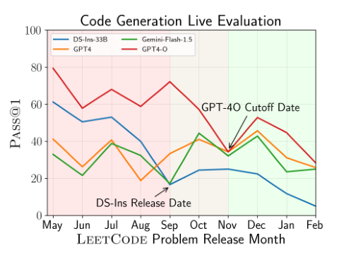

LiveCodeBench scores a model only on problems released after it was trained
That date rule caught an early DeepSeek model scoring about 60 on old LeetCode problems and near zero on ones released after its cutoff. It is also why two numbers both called 'LiveCodeBench' rarely cover the same problems.
Why this matters
AI labs advertise how well their models write code, and LiveCodeBench is one of the numbers they reach for. It looks like a fact about the model, the way a batting average looks like a fact about a hitter. It is really a fact about a model measured on a particular set of dated problems. This lesson takes one apart: where the problems come from, why every one carries a release date, and how that date exposes a model that had already seen the answer. It also shows why two scores both called LiveCodeBench often cannot be compared. By the end you will know what to ask before trusting one: which problems, from which months, in which version of the test.
- 01
- Hand-writing HumanEval's 164 problems solved contamination in 2021 and caused it by 2024: the fixed coding test this one was built to replace, and how publishing its problems leaked them into training data.
- 02
- Change which SWE-bench tasks are counted and GPT-4o's score doubles: a coding instrument that grades a change across a whole repository instead of one problem's solution.
Every problem carries the date it was released
LiveCodeBench is a coding test for language models, built by a team at Berkeley, MIT, and Cornell and first released in 2024.1 It collects programming puzzles from three online contest sites, LeetCode, AtCoder, and Codeforces, and does one thing the older coding tests did not: it records the date each problem was published. The version described in the paper holds 511 problems, and every one is tagged with the day its contest ran.1
A model is graded one problem at a time. Hand it a single puzzle from a contest, and it writes one program. The benchmark runs that program against the problem's hidden tests, about seventeen of them on average, the same kind of checks a contest uses to accept or reject a human entrant.1 Pass every test and the problem counts as solved; miss one and it does not. The score, called pass@1, is the share of the whole set the model solved this way, on one try each.1 The HumanEval score this course covered earlier averages many tries per problem into the same kind of fraction, and that arithmetic carries over here unchanged.
The paper defines four jobs it scores separately, which it calls scenarios.1 The one people quote, and the one this lesson follows, is code generation: the model writes a program from a description. The other three are self-repair, fixing a program that failed its tests; code execution, predicting what a program prints for a given input; and test output prediction, predicting a test's expected output from the problem alone.
That already sets LiveCodeBench apart from two instruments the course has taken apart. A Codeforces rating is an Elo estimate fit to contests the model never actually entered; LiveCodeBench scores the model's real submissions to real contest problems. And where SWE-bench grades a change spread across a whole software project, LiveCodeBench grades a single self-contained problem's solution. What makes it its own instrument is neither of those. It is the date on every problem.
Where DeepSeek stopped training, its score fell
A coding test has a built-in weakness. Models train on enormous scrapes of the public internet, which already contain worked solutions to famous programming problems. A model that read a problem's answer while training can reproduce it without solving anything, so its score measures what it memorized. This is contamination. HumanEval, the fixed coding test released in 2021, fought it by hand-writing all 164 of its problems, precisely because its authors knew their models were trained on a large fraction of GitHub, which already held solutions from many sources.2 But a fixed set, once published so anyone can check a score, ends up in the next models' training data, and that is how the test lost its guard. LiveCodeBench fights the same contamination a different way.
The release dates are its answer. Every problem carries the day it was published, and every model has a training cutoff, the date its training data stops. So the benchmark scores a model on only the problems published after that cutoff, and a problem that did not exist when the model finished training could not have been in its training data.13 The cutoff it uses is the one the model's maker publishes, or, when the maker publishes none, the model's release date.1
The paper reports the sharpest single case for an early DeepSeek coding model, released around September 2023. On LeetCode problems from May 2023, months before its release, it solved about 60 percent on the first try. On LeetCode problems from that September, right at its release, the same model solved close to none.1 Nothing about the model changed between those two batches. What changed is that the May problems were old enough to sit in its training data and the September problems were not.

The paper's chart plots the same date effect for several models. GPT-4-O, whose cutoff is later, scores well on problems released before November 2023, its stated cutoff, and lower on the ones released after.1 Each model stopped training at a different time, so the window of fair problems slides forward with each one. That is what a moving cutoff means, and it is why no two models are necessarily judged on the same problems.
What the date rule still lets through
The date rule reduces contamination. It does not remove it, and three gaps are worth keeping in view.
First, the cutoff is a date the model's maker supplies. The benchmark trusts the training cutoff a lab publishes, and substitutes the model's release date when the lab publishes none.1 The defense against contamination therefore rests on a number reported by the same party whose score it protects.
Second, a problem released after a cutoff can be contaminated later. An independent survey of contamination-resistant benchmarks notes that contest problems are likely to be reused in future competitions, whose solutions then reach the internet.4 A problem that was genuinely unseen when a model trained can become a leak for the next model, and the release date it carries cannot see that.
Third, the fix was uneven across the contest sites. The collapse the paper found was, in its own words, primarily on the LeetCode problems; performance on AtCoder problems stayed relatively smooth across the same months.1 A window that is clean on one source need not be clean on another.
None of this sinks the method. A score on post-cutoff problems is more trustworthy than a score on a fixed public set. But more trustworthy is not clean, and how clean it is depends on which problems, from which site, dated by whom.
No LiveCodeBench score travels without its window
Because the benchmark grows and every score is measured on some window of it, a LiveCodeBench score is never a single number. It is a number plus the slice of problems it was measured on. Strip the slice away and two scores cannot be compared at all.
The benchmark is published in dated versions, each a wider window than the last.
| Version | Release window | Problems |
|---|---|---|
| v1 | May 2023 – Mar 2024 | 400 |
| v2 | May 2023 – May 2024 | 511 |
| v3 | May 2023 – Jul 2024 | 612 |
| v4 | May 2023 – Sep 2024 | 713 |
| v5 | May 2023 – Jan 2025 | 880 |
| v6 | May 2023 – Apr 2025 | 1,055 |
All six are called LiveCodeBench. A score on v6's 1,055 problems and a score on v2's 511 are measured on different tests that happen to share a name and a starting month.
Two labs reporting a LiveCodeBench number for their models picked different windows to do it. In its December 2024 technical report, DeepSeek gave its base model a LiveCodeBench figure of 19.4. The row it sits in states its conditions in full: problems released between 1 August and 1 November 2024, scored pass@1, with three worked examples shown to the model first.6 The window sits just after DeepSeek's own data collection, chosen so the problems post-date its training.
| Model (base) | Pass@1 |
|---|---|
| DeepSeek-V3 | 19.4 |
| Llama-3.1 405B | 15.5 |
| Qwen2.5 72B | 12.9 |
| DeepSeek-V2 | 11.6 |
Alibaba's Qwen team reported its own LiveCodeBench figures a month earlier, and chose a different window: problems from July to November 2024, which it called the latest published questions that could not have leaked into its training set.7 Both windows are honest. Each lab picked problems its own model finished training before, exactly as the benchmark intends. But DeepSeek's August-to-November slice and Qwen's July-to-November slice are not the same problems, and the dataset versions beneath them differ too. Set DeepSeek's 19.4 beside a Qwen number and you are comparing results on two different tests.
So two LiveCodeBench numbers compare only when everything behind them matches: the problems, the span of months, the dataset version, the scenario, and the count of examples shown first. Usually something does not match, and by design it will not. Because the problems are dated, anyone can re-score the models on one shared window instead of each lab's chosen one, and that shared window is the only footing on which two of these numbers can be compared.8
The takeaway
A LiveCodeBench score is a model's first-try pass rate on programming-contest problems, and the one thing that sets it apart from an ordinary coding test is that every problem is stamped with the date it was published. That date does real work. Score a model on only the problems released after it finished training, and a high score can no longer be memory. That is how the benchmark caught an early DeepSeek model scoring about 60 on old LeetCode problems and near zero on new ones. The same date stamp is why the number resists comparison. The test grows month by month, six versions so far, and each lab reports its model on a window of its own choosing, so two figures called LiveCodeBench usually sit on different problems. The date rule is no perfect decontaminant either: the cutoff comes from the model's own maker, tomorrow's contests can reuse today's problems, and the leak the paper found was on LeetCode and not AtCoder. So when the next LiveCodeBench number appears, do not ask only how high it is. Ask which months of problems it covers, which version of the dataset, and whose cutoff decided what counted.
- 01
- The project site and live leaderboard: select a time window and re-score every model on the same months.
- 02
- The team's writeup of the hosted leaderboard: how the scrolling-over-time control works and why the cutoff rule drives it.
Sources
- arXiv · Jain et al., “LiveCodeBench: Holistic and Contamination Free Evaluation of Large Language Models for Code”
- arXiv · Chen et al., “Evaluating Large Language Models Trained on Code” (HumanEval)
- LiveCodeBench · project site, contamination and scenarios
- arXiv · “Recent Advances in Large Language Model Benchmarks against Data Contamination: From Static to Dynamic Evaluation”
- GitHub · livecodebench/livecodebench, dataset versions
- arXiv · DeepSeek-AI, “DeepSeek-V3 Technical Report”
- Qwen · “Qwen2.5-Coder: Family of Code Models”
- Hugging Face · “Introducing the LiveCodeBench Leaderboard”